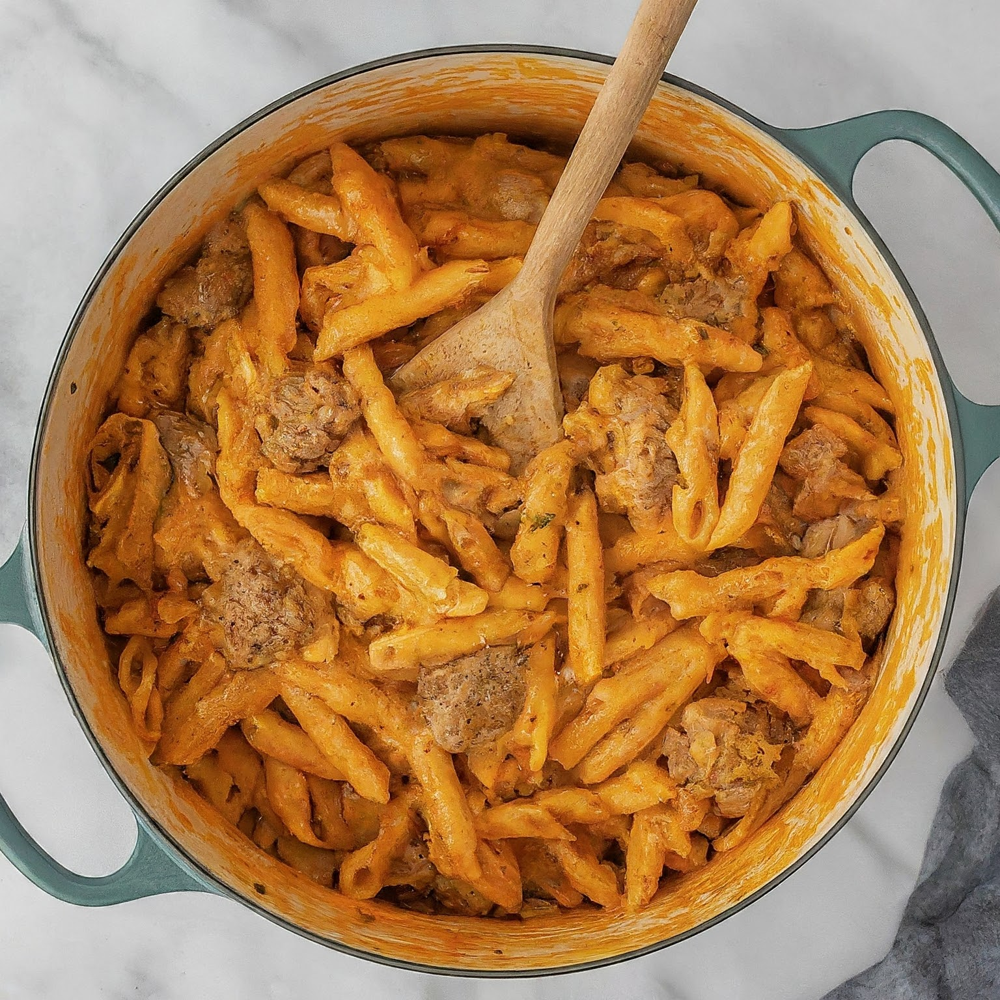

Delicious Cheese Burger Pasta
Ingredients:
- 1 lb ground beef
- 1 small onion, diced
- 2 cloves garlic, minced
- 1 can (14.5 oz) diced tomatoes
- 1 can (8 oz) tomato sauce
- 2 cups beef broth
- 2 cups uncooked pasta (penne, rotini, or elbow macaroni)
- 1 teaspoon Italian seasoning
- Salt and pepper to taste
- 1 cup shredded cheddar cheese
- Optional toppings: chopped pickles, diced tomatoes, chopped lettuce, ketchup, mustard
Instructions:
1. In a large skillet or pot, brown the ground beef over medium heat until no longer pink. Drain any excess fat.
2. Add the diced onion and minced garlic to the skillet. Cook until the onion is translucent and fragrant.
3. Stir in the diced tomatoes (with juices), tomato sauce, beef broth, uncooked pasta, Italian seasoning, salt, and pepper.
4. Bring the mixture to a boil, then reduce the heat to a simmer. Cover and cook for about 12-15 minutes, or until the pasta is tender, stirring occasionally.
5. Once the pasta is cooked, stir in the shredded cheddar cheese until melted and well combined.
6. Taste and adjust seasoning as needed.
7. Serve hot, garnished with your favorite burger toppings like chopped pickles, diced tomatoes, chopped lettuce, a drizzle of ketchup, and mustard.
Enjoy this cheesy and flavorful one-pot cheeseburger pasta dish that combines the flavors of a classic cheeseburger with the heartiness of pasta! üçîüßÄüçù